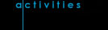

|
|  |
 |
Public & Media Events |

November 4, 2021 during an Aurora storm by Ron Waldron. Canon SLR camera ISO 800, 10 sec exp.
All events are free of charge and open to the general public unless otherwise noted
INSTRUCTIONS FOR JOINING EXECUTIVE or GENERAL MEETINGS by ZOOM
Download the ZOOM app onto your computer or device (if you haven't already.)An email will be sent to you with the meeting link information for your computer or phone. Check the newsletter monthy for last minute changes in the link or event scheduling. Email sk_centre@rasc.ca if you did not receive an email and wish to join the meeting.
September 7 - Observer's Group Night at the Sleaford Observatory
September 14 - Observe the Moon Night at Shakespeare on the Saskatchewan
September 16 - RASC General Meeting - Hybrid: In-person U of S Observatory & On-line
October 5 - Observer's Group Night at the Sleaford Observatory
October 21 - RASC General Meeting
November 2 - Observer's Group Night at the Sleaford Observatory
November 18 - RASC General Meeting
November 30 - Observer's Group Night at the Sleaford Observatory
December 9 - RASC General Meeting
December 28 - Observer's Group Night at the Sleaford Observatory
2044
August 17 - 22 or August 22 - 28 - Saskatchewan Summer Star Party 2044 - 47th Annual SSSP at Cypress Hills Provincial Park. Program TBD. Stay tuned!
August 22 - Total Eclipse of the Sun - Visible from the Saskatchewan Summer Star Party. SSSP'44 is on the Centre Line.
For More Information on Events & the RASC:
See our Newsletter or email us.
For information specifically on Saskatchewan Summer Star Party (SSSP), email us.
Or see Starparty homepage.
Click here to join the Saskatoon Centre.
Something wrong on this page? Email the Events Page editor.
Sleaford Observatory
One of the benefits of membership with our Centre is access to our remote viewing site at Sleaford. For members who would like more information on Sleaford, please contact Darrell Chatfield and request a current copy of The Sleaford Observatory Users Manual.
Light Pollution Abatement Committee
We are fighting light pollution! The Saskatchewan Light Pollution Abatement Committee is a collaboration between the Saskatoon and Regina RASC Centres and a number of other key people in the province. See: Light Pollution in Saskatchewan.
Observing Group
The RASC Saskatoon Centre has an active Observing Group. Contact the Observing Group Coordinator for details of the group's activities.
Observing Aids
- Chatfield Binocular Challenge List
You can earn you binocular certificate by observing 35 of the 40 objects on this list, created by Darrell Chatfield. Once you have started, register with the newsletter editor, Colin Chatfield, to get your name added to the challenge list in the Saskatoon Skies newsletter. - The Chatfield Binocular Challenge List - Expanded Version
This is a description of the Chatfield Binocular List fields that goes beyond just the basic objects. Since you've taken time to find the Chatfield Objects, you might as well hang around a bit and explore whatelse is visible within the binocular field of view. The expanded list was produced by Rick Huziak during his run at the challenge.
National RASC Activities
The Royal Astronomical Society of Canada has many activities nationwide.
RASC Membership Activities
RASC member contributions to astronomy:-
SASKATCHEWAN
AMATEUR ASTRONOMER DISCOVERS COMET! Comet
Petriew! Congratulations to Regina astronomer Vance Petriew who
discovered the comet at the 2001 Saskatchewan Summer Star Party!
-
CHANT MEDAL.
In 2001,
Rick Huziak received the prestigious Chant Medal. Congratulations Rick! We are
very proud of your accomplishments in amateur astronomy and are very
lucky to have you around. Rick is also the recipient of the
AAVSO
Director's Award, presented to him at the 92nd AAVSO Tuscon Conference.
Questions about astronomy, the Saskatoon Centre or membership?
E-mail: sk_centre@rasc.ca
Snail-mail: RASC Inc.
PO Box 31086, RPO Broadway
Saskatoon, SK S7H 5S8